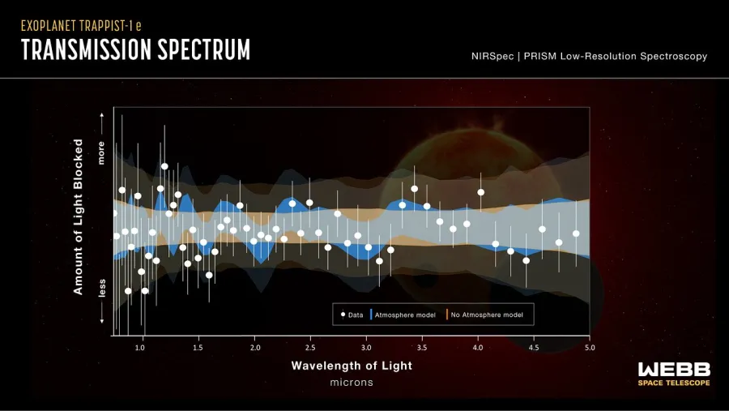

September 8, 2025
First Webb data on TRAPPIST-1 e: the question of an atmosphere remains open
TRAPPIST-1 e orbits its star at a distance where liquid water on the surface is theoretically possible – provided the planet has an atmosphere. The James Webb Space Telescope observed four transits of the planet with its NIRSpec instrument.
According to the analysis, TRAPPIST-1 e no longer has a primordial, hydrogen-rich atmosphere. An atmosphere dominated by carbon dioxide, as on Venus or Mars, is also considered unlikely. Whether the planet has a heavier, secondary atmosphere or none at all cannot be decided with the data so far. Further observations are under way.
Sources: NASA: "NASA Webb Looks at Earth-Sized, Habitable-Zone Exoplanet TRAPPIST-1 e.", 2025-09-08; ESA/Webb: "TRAPPIST-1 e Transmission Spectrum (NIRSpec)." (image page), 2025-09-08